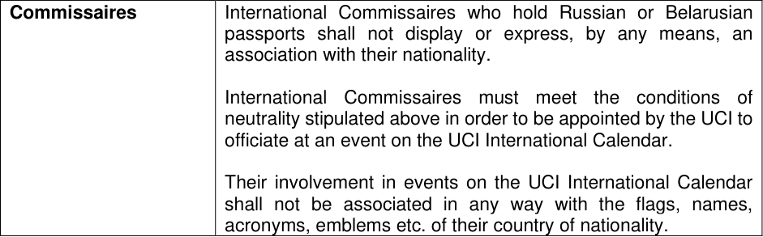

UCI CYCLING REGULATIONS
Annex 1 of the Ad Hoc Rules Conditions of Participation for individual neutral riders of Russian and Belarusian sporting nationality and their support personnel.
Preamble
Pursuant to the recommendations issued by the International Olympic Committee (IOC) on 28 March 2023 and the Ad Hoc Rules adopted by the UCI Management Committee in response to Russia’s invasion of Ukraine, the UCI enacts the following conditions for the participation of riders of Russian and Belarusian sporting nationality and their support personnel in events on the UCI International Calendar:
| Participation | Except for the participation of riders with their team in accordance with article 5 b. of the Ad Hoc Rules, riders of Russian and Belarusian sporting nationality and their support personnel may only participate in events on the UCI International Calendar in an individual and neutral capacity, and in no case as representatives of the Russian Federation or the Republic of Belarus, their National Federations or NOCs. A rider participating in events on the UCI International Calendar under the previous paragraph is considered as an "Individual Neutral Athlete". Individual Neutral Athletes may not participate in events which are based on a classification by teams. Their participation is only authorised in events based on individual classification. With regard to the support personnel, only persons holding a high-level medical or technical function which is essential to the participation of Individual Neutral Athletes may be granted accreditation. Notwithstanding the above eligibility, the provisions of the UCI Regulations (cf. article 19 of the Ad hoc Rules) allowing an event organiser to exclude the participation of a rider or a team remain applicable. |
|---|---|
| National teams | In accordance with article 4 of the Ad hoc Rules, the participation of national teams composed of riders of Russian or Belarusian sporting nationality is not permitted in events on the UCI International Calendar. |
| Neutrality |
Any participation of a rider of Russian or Belarusian sporting nationality and support personnel must fully comply with the UCI Regulations, including the Anti-Doping rules, the Olympic Charter and any other regulations applicable to events on the UCI International Calendar concerning the conditions of participation. In addition, the strictest neutrality towards the Russian Federation and the Republic of Belarus at any time since the beginning of the war in Ukraine is required for any participation in |
E010124 AD HOC RULES 1
UCI CYCLING REGULATIONS
| Col1 | events on the UCI International Calendar, whether as an Individual Neutral Athlete or with a UCI team or club, according to the following points: 1) No link with the Russian or Belarusian military or with any other national security agency Riders and support personnel who are or have been contracted to the Russian or Belarusian military, including any affiliated entities, or with national security agencies cannot participate in events on the UCI International Calendar. 2) No communication associated with Russia or Belarus Riders and support personnel must refrain from any activity or communication, either verbal, non-verbal or written, associated with the national flag, anthem, emblem or any other symbol of the Russian Federation, the Republic of Belarus, their National Federations or NOCs, or from any support for the war in Ukraine in any official venue or in the media (including interviews, social media, retweets and reposted messages on Twitter, forwarded messages, etc. ) at any time since the beginning of the military aggression in Ukraine by the Russian Federation and the Republic of Belarus. Riders and support personnel must not make any public statements or comments or take any action or behave in any way that may prejudice the interests of the competition, its integrity or the participant's neutrality required as a condition for participation. 3) No active support for the war in Ukraine Only riders and support personnel who have not opposed to the peace mission of the Olympic Movement by actively supporting the war in Ukraine may participate in events on the UCI international calendar. Members contracted to the Russian and Belarusian military or national security agencies are considered as supporting the war. Any other form of verbal, non-verbal or written expression, explicit or implicit, at any time since the beginning of the war in Ukraine, in particular public statements, including those made in social media, participation in pro-war demonstrations or events, and the wearing of any symbol in support of the war in Ukraine, for example the "Z" symbol, are considered to be acts of support for the war in Ukraine. |
|---|---|
| Anti-Doping requirements |
All Riders of Russian or Belarusian sporting nationality must comply with all anti-doping requirements applicable to them, in particular those set out in the UCI Anti-Doping Rules. With regard to_Individual Neutral Athletes_, the UCI shall determine the specific procedures and rules to be fulfilled for their |
E010124 AD HOC RULES 2
UCI CYCLING REGULATIONS
| Col1 | participation in doping controls, in collaboration with its delegated body for conducting doping controls in cycling, the International Testing Agency (ITA). |
|---|---|
| Application for status ofIndividual Neutral **Athlete ** |
Riders shall apply to the UCI to be granted the status of_Individual_ Neutral Athlete. Riders shall submit the relevant application form (provided by the UCI) to neutralathletes@uci.ch. A rider shall only be entitled to compete in events in accordance with article 5 a. of the Ad Hoc Rules further to the issuance of such confirmation by the UCI. Upon receipt of the application form, the UCI shall carry out verifications to ensure compliance with the applicable requirements for such status of_Individual Neutral Athlete_, in particular those related to neutrality as set out above. The UCI shall confirm if the status of_Individual Neutral Athlete_ can be granted within a deadline of 30 days. The UCI may apply a fee for the processing of the application in case exceptional measures for the verification of the applicable rules are required. In such a case, the processing of the application shall be suspended until payment of the application fee. The UCI shall publish the list of riders to whom the status of Individual Neutral Athlete has been granted. If, after granting the status of_Individual Neutral Athlete_, the UCI becomes aware of a breach of the eligibility rules or conditions of participation, the UCI shall withdraw the status of_Individual_ Neutral Athlete_and delete the rider’s name from the published list. The same process as for Individual Neutral Athletes shall apply _mutatis mutandis for their support personnel. |
| Registration for UCI events |
If, after confirming a rider’s entry, the UCI becomes aware of a breach of the eligibility rules or conditions of participation, the UCI or the Commissaires Panel may refuse the start or disqualify the rider. A support personnel may also be excluded from an event. |
| Flags | Flags of the Russian Federation or the Republic of Belarus (current or historical) may not be raised or displayed at any competition venue, nor in any area where ancillary events are held, or any other area controlled by the organiser of an event on the UCI International Calendar. This requirement does not apply to statutory meetings in which the National Federations of Russia and/or Belarus are authorised to take part. Where the use of a flag is necessary to identify_Individual Neutral_ Athletes(e.g., at ceremonies, protocol events, on-site, TV/media displays), either an all-white flag shall be used or no flag shall be used. |
E010124 AD HOC RULES 3
UCI CYCLING REGULATIONS
| Col1 | Each organiser of an event on the UCI International Calendar shall be responsible for ensuring that no flag of the Russian Federation or the Republic of Belarus, or any other object referring to these countries, is displayed within the scope of, or in relation to, an event, including by spectators. |
|---|---|
| Anthems | The national anthems of Russia and Belarus (or any other anthem associated with the Russian Federation or the Republic of Belarus) shall not be played or sung at any time during an event on the UCI International Calendar in any competition venue, nor in any area where ancillary events are held, or any other area controlled by the organiser of an event on the UCI International Calendar. The anthem to be used to represent any_Individual Neutral_ Athlete at an official ceremony (opening or closing, protocol, medal ceremony, etc.) shall be Beethoven's Ode to Joy. |
| Uniforms | The uniform worn by_Individual Neutral Athletes_ and their support personnel shall be of a solid light blue colour. The uniforms (whether competition, warm-up, formal, ceremonial, casual, etc.), clothing, equipment, accessories and personal items belonging to_Individual Neutral Athletes_ and their support personnel that are worn, used and/or displayed at competition venues, or any area where ancillary events are held, or any other area controlled by the organiser, shall not contain: - Any recognition of, or reference to, the Russian Federation, the Republic of Belarus, or their National Federations or NOCs, or any national identification of Russia or Belarus (such as flag, coat of arms or any other national symbol or emblem, whether official or unofficial) in any language or format; - Any emblem or identification, commercial or otherwise, of any Russian or Belarusian organisation or entity; - Any expression (message, graphic element, symbol, etc) with a direct or indirect political connotation. Any clothing used by an_Individual Neutral Athlete_ or his support personnel must be submitted to the UCI for approval. Any application must be submitted at least one month before the event in question. Any use of clothing other than the one approved by the UCI may result in the rider's refusal to start or disqualification. |
| Medals | Individual Neutral Athletes may receive medals for their performances and participate in the relevant award ceremonies. Due to the participation as individuals, these medals shall not count towards any medal table by nations. |
E010124 AD HOC RULES 4
UCI CYCLING REGULATIONS
E010124 AD HOC RULES 5
